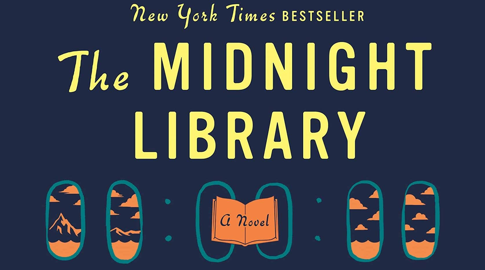

I listened to The Midnight Library as an audiobook while I was working at Target. I was pretty depressed at the time. The job involved a lot of solitary work in the back — going up and down a ladder, stocking product that, more often than not, would sit there until it was close to its expiration date and then come back down for markdown or disposal. There's something about that particular kind of work that gives your mind too much room. You can't really listen to anything that demands attention, but you also can't escape your own thoughts. An audiobook in one ear was the closest thing to company I could manage.
What I needed, honestly, was to sulk. To go back over the long list of things I felt I had done wrong, decisions I wished I could take back, turns I'd taken that I was sure had landed me in the wrong life. The questions kept circling: where would I be if I hadn't made those decisions? How would I be different? Would I even still be me?
That's the territory Matt Haig's book walks into, and what I found striking is that he doesn't try to talk you out of any of it. Nora's story — the protagonist, who finds herself in a library between life and death where each book is a version of the life she could have lived — sits squarely with the inner suffering of day-to-day living, with regret, with grief, with the weight of compounding bad days. It doesn't dismiss any of that. It doesn't reframe it as a gift or a lesson or a stepping stone. It just lets it be what it is.
And then, slowly, it unfolds something else. Without ever turning preachy, without slipping into the saccharine register that so many books about depression collapse into, it works its way toward the idea that the best life you have is the one you're actually living. Not because the others would have been worse — some of them genuinely wouldn't have been — but because the one you're in is the only one you can actually meet, change, or be present for. The book earns that conclusion. It doesn't hand it to you.
What I appreciated most was how Haig avoids the two failure modes I usually associate with this kind of story. He doesn't moralize, and he doesn't perform optimism. The prose isn't trying to fix you. It's just sitting with you, walking through the question alongside you, and trusting that you're capable of arriving somewhere on your own.
The way I describe it now: it's a book for when you're tired of sulking but can't just put on a happy face to ignore it — a wonderful, emotional, and well-constructed read.
I think about it more often than I expected to.